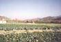

|
|
Feu clic damunt la fotografia que vulgueu engrandir
(s'obrirà una finestra... un pèl de paciència)
| |
|
|  |

Imatges del Rec Comtal abans
Aquest patrimoni ha desaparegut.
Imatges de Sant Andreu de Palomar d'ara
| Barri
de : |
Imatges de Sant Andreu de Palomar
Imatges de Sant Andreu de Palomar d'abans
Ajudeu-nos.
Feu-nos arribar imatges andreuenques.
webstap@sant-andreu.com
| |
|